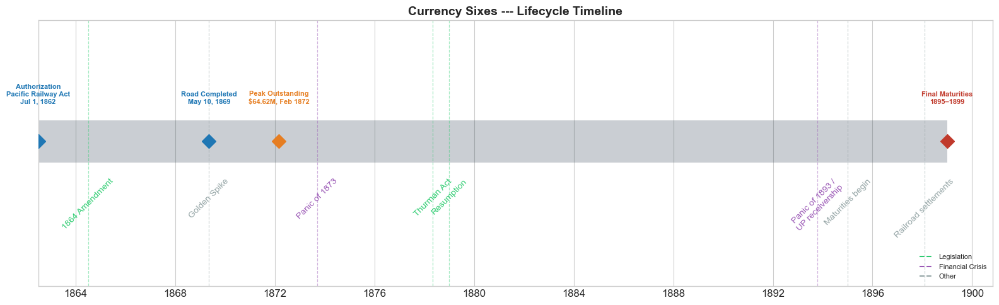
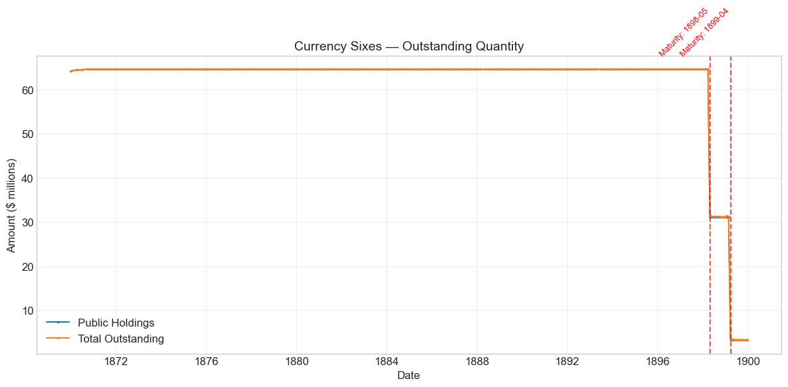
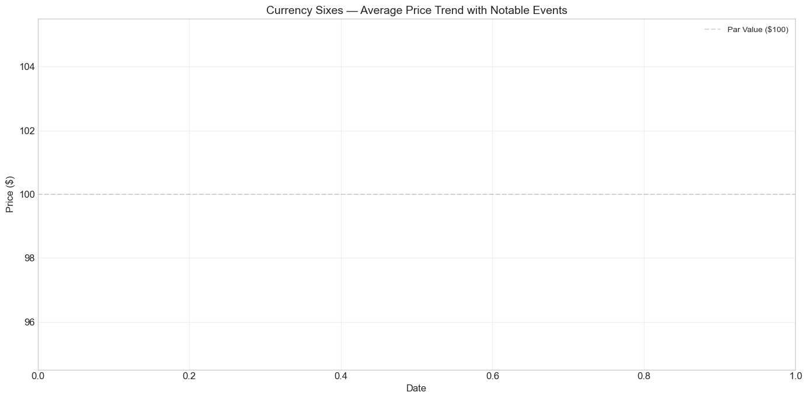

Bond Biography: Currency Sixes — Bonds Issued to Pacific Railroad#
Enhanced from the Hall-Payne-Sargent US Federal Bond Database (2,857 issues, 1776-1960)
Bond ID (L1): 40007
Category: Other > Other > Pacific Railroad
Common Name: Currency Sixes
import pandas as pd
import numpy as np
import matplotlib.pyplot as plt
import matplotlib.patches as mpatches
import datetime
import warnings
warnings.filterwarnings('ignore')
from matplotlib.dates import DateFormatter, YearLocator
plt.style.use('seaborn-v0_8-whitegrid')
plt.rcParams.update({'figure.figsize': (12, 6), 'font.size': 12,
'axes.titlesize': 14, 'axes.labelsize': 12})
# Load the bond database
store = pd.HDFStore('../data/BondDF.h5', mode='r')
BondList = store['BondList']
BondQuant = store['BondQuant']
BondPrice = store['BondPrice']
store.close()
BondQuant_T = BondQuant.transpose()
BondPrice_T = BondPrice.transpose()
bond_id = 40007
print(f'Loaded data for: Currency Sixes — Bonds Issued to Pacific Railroad (ID: 40007)')
/Users/thomassargent/anaconda3/lib/python3.9/site-packages/pandas/core/arrays/masked.py:60: UserWarning: Pandas requires version '1.3.6' or newer of 'bottleneck' (version '1.3.5' currently installed).
from pandas.core import (
Loaded data for: Currency Sixes — Bonds Issued to Pacific Railroad (ID: 40007)
Overview#
The Currency Sixes were the financing instruments behind one of the most ambitious infrastructure projects in American history: the Transcontinental Railroad (1,912 miles). Authorized under the Pacific Railway Act of July 1, 1862, and issued between 1865 and 1869, these bonds carried a 6% coupon rate paid semi-annually and were “payable in thirty years after date” (Act of 1 July 1862, §5), so they matured between 1895 and 1899. Peak outstanding reached $64.62 million on 1872-02-29.
The name “Currency Sixes” derives from two features: the stability of the fixed 6% interest rate, and the critical fact that interest was paid in U.S. currency rather than gold — a meaningful distinction during the Civil War era when the greenback traded at a discount to specie. This made them distinct from gold-payable federal bonds and reflected the wartime financial reality.
The Currency Sixes were obligations of the United States. The Pacific Railway Act directed the Secretary of the Treasury to issue them and lend them to six Pacific railroad companies, chiefly the Union Pacific Railroad (building westward from Omaha) and the Central Pacific Railroad (building eastward from Sacramento), which sold them to pay for construction. The companies owed the government the principal and the interest, secured by a lien on the road. The Act of 1862 made that lien “a first mortgage on the whole line” (§5). The Act of 2 July 1864 let each company issue its own first-mortgage bonds up to the amount of the government bonds it had received and made the government’s lien subordinate to them: “the lien of the United States bonds shall be subordinate to that of the bonds of any or either of said companies” (§10). The Currency Sixes thus stand at the intersection of wartime fiscal innovation, westward expansion, and the emergence of modern infrastructure finance in the United States. (Crocker, 2014; National Archives; Davis, 1896)
Historical Context#
The Currency Sixes were born from the convergence of three powerful forces in 1860s America: the military imperative of binding California to the Union during the Civil War, the economic vision of a continent-spanning transportation network, and the financial innovation required to fund an unprecedented engineering project in the midst of war.
Key Events#
Date |
Event |
Significance |
|---|---|---|
1862-07-01 |
Pacific Railway Act |
Authorized construction of the Transcontinental Railroad and issuance of government bonds to the Union Pacific and Central Pacific railroads. Provided land grants and government-backed bonds at \(16,000-\)48,000 per mile depending on terrain. |
1864-07-02 |
1864 Amendment to the Pacific Railway Act |
Doubled land grants, let each company issue its own first-mortgage bonds up to the amount of the government bonds, and made the government’s lien subordinate to those company bonds (§10). The company bonds became easier to sell to private investors; the government kept a second lien. |
1869-05-10 |
Completion of the Transcontinental Railroad |
The golden spike at Promontory Summit, Utah, marked the successful connection of 1,912 miles of track. Boosted investor confidence in the bonds and validated the financing model. |
1873-09-18 |
Panic of 1873 |
A severe financial crisis triggered by railroad over-speculation. Jay Cooke & Company’s failure (financing the Northern Pacific Railway) sent shockwaves through railroad bond markets, causing significant fluctuations in Currency Sixes prices. |
The Credit Mobilier Scandal (1864-1867)#
The Credit Mobilier scandal remains one of the most notorious episodes of corruption in American history and is inseparable from the Currency Sixes story. Executives at Union Pacific created the Credit Mobilier of America as a construction company, then awarded it contracts at vastly inflated prices — overcharging railroad construction fees and manipulating contracts to pocket the difference. The scheme was designed to exploit a Congress that had become increasingly lenient in providing aid for the railroad project. When the scandal was exposed in 1872, it implicated several members of Congress who had received discounted shares, severely damaging public trust in railroad finance. Congress subsequently refused to make any further loans to railroad construction in the nineteenth century. (History.com Editors, 2022)
# Define notable events for annotations
notable_events = [
{'date': '1862-07-01', 'event': 'Pacific Railway Act'},
{'date': '1864-07-02', 'event': '1864 Amendment'},
{'date': '1869-05-10', 'event': 'Completion of Transcontinental Railroad'},
{'date': '1873-09-18', 'event': 'Panic of 1873'}
]
Bond Features#
Feature |
Detail |
|---|---|
Common Name |
Currency Sixes |
Official Name |
Bonds Issued to Pacific Railroad |
Authorizing Act |
Pacific Railway Act, July 1, 1862 |
Authorization Date |
July 01, 1862 |
First Issue Date |
1865 (issuance continued through 1869) |
Term |
30 years |
Coupon Rate |
6.0% |
Payment Frequency |
Semi-annual (2 times/year) |
Payment Medium |
U.S. currency (not gold) |
Par Value |
$100 |
Callable |
No call provision in the Act of 1862 (“payable in thirty years after date”) |
Authorized Amount |
~$64 million |
Price Sold |
Par (1.0 per $100 face value) |
Issuer |
United States Treasury, lending the bonds to the Pacific railroad companies (chiefly Union Pacific and Central Pacific) |
# Display full bond features from database
row = BondList.loc[40007]
display_cols = [
"Treasury's Name Of Issue", 'Authorizing Act', 'Term Of Loan',
'First Issue Date', 'First Redemption Date', 'Final Redemption Date',
'Coupon Rate', 'Coupons Per Year', 'Callable', 'Coin',
'Authorized Amount', 'Price Sold'
]
print('Bond Features from Database:')
print('=' * 55)
for col in display_cols:
if col in row.index:
print(f' {col:<30} {row[col]}')
Bond Features from Database:
=======================================================
Treasury's Name Of Issue Bonds issued to Pacific Railroad
Authorizing Act July 1, 1862
Term Of Loan 30 years
First Issue Date NaT
First Redemption Date NaT
Final Redemption Date NaT
Coupon Rate 6.0
Coupons Per Year 2.0
Callable 0.0
Coin 1.0
Authorized Amount nan
Price Sold 1.0
Lifecycle Timeline#
The timeline below marks the statutory and market milestones of the Currency Sixes: authorization under the Pacific Railway Act, the subsidy-bond issues of 1862–1869 culminating in the road’s completion, the peak of outstanding debt in 1872, the Thurman Act’s sinking-fund regime, and the maturities and railroad settlements of 1895–1899 that closed the account.
# ── Bond Lifecycle Timeline ──────────────────────────────────
fig, ax = plt.subplots(figsize=(16, 5))
from datetime import datetime as DT
import matplotlib.dates as mdates
# Bond life span
auth_date = DT(1862, 7, 1)
completion = DT(1869, 5, 10)
peak_date = DT(1872, 2, 29)
last_maturity = DT(1899, 1, 1)
# Draw the main bar
ax.barh(0, (last_maturity - auth_date).days, left=mdates.date2num(auth_date),
height=0.35, color='#2c3e50', alpha=0.25, label='Bond Lifetime')
# Key milestones
milestones = [
('Authorization\nPacific Railway Act\nJul 1, 1862', auth_date, '#1f77b4'),
('Road Completed\nMay 10, 1869', completion, '#1f77b4'),
('Peak Outstanding\n$64.62M, Feb 1872', peak_date, '#e67e22'),
('Final Maturities\n1895\u20131899', last_maturity, '#c0392b'),
]
for label, d, c in milestones:
ax.plot(mdates.date2num(d), 0, 'D', color=c, markersize=11, zorder=5)
ax.annotate(label, (mdates.date2num(d), 0.3), ha='center', va='bottom',
fontsize=8, fontweight='bold', color=c)
# Historical events
events = [
('1864 Amendment', DT(1864, 7, 2), '#2ecc71'),
('Golden Spike', DT(1869, 5, 10), '#95a5a6'),
('Panic of 1873', DT(1873, 9, 18), '#9b59b6'),
('Thurman Act', DT(1878, 5, 7), '#2ecc71'),
('Resumption', DT(1879, 1, 1), '#2ecc71'),
('Panic of 1893 /\nUP receivership', DT(1893, 10, 13), '#9b59b6'),
('Maturities begin', DT(1895, 1, 1), '#95a5a6'),
('Railroad settlements', DT(1898, 2, 1), '#95a5a6'),
]
for name, d, c in events:
ax.axvline(mdates.date2num(d), color=c, alpha=0.45, linestyle='--', lw=0.9)
ax.annotate(name, (mdates.date2num(d), -0.3), ha='center', va='top',
fontsize=10, rotation=45, color=c)
ax.set_yticks([])
ax.xaxis.set_major_formatter(mdates.DateFormatter('%Y'))
ax.xaxis.set_major_locator(mdates.YearLocator(4))
ax.set_title('Currency Sixes --- Lifecycle Timeline', fontsize=14, fontweight='bold')
ax.set_ylim(-1.2, 1.0)
# Legend patches
from matplotlib.lines import Line2D
legend_els = [
Line2D([0],[0], color='#2ecc71', ls='--', label='Legislation'),
Line2D([0],[0], color='#9b59b6', ls='--', label='Financial Crisis'),
Line2D([0],[0], color='#95a5a6', ls='--', label='Other'),
]
ax.legend(handles=legend_els, loc='lower right', fontsize=8, framealpha=0.8)
plt.tight_layout()
plt.show()

Bond Quantity Over Time#
The bond’s outstanding quantity peaked at $64.62 million on 1872-02-29. Data spans from 1869-12-31 to 1899-12-31 (353 monthly observations).
# Bond quantity over time
fig, ax = plt.subplots(figsize=(12, 6))
for stype in ['Public Holdings', 'Total Outstanding']:
try:
s = BondQuant_T.loc[(40007, stype)]
s = s[s.notna()]
if len(s) > 0:
ax.plot(s.index, s.values / 1e6, marker='.', markersize=3, linewidth=1.5, label=stype)
except KeyError:
pass
# Mark approximate maturity dates
maturity_dates = ['1898-05', '1899-04']
for md in maturity_dates:
ax.axvline(pd.to_datetime(md), color='red', linestyle='--', alpha=0.7)
ax.text(pd.to_datetime(md), ax.get_ylim()[1] if ax.get_ylim()[1] > 0 else 65,
f'Maturity: {md}', color='red', fontsize=9, rotation=45, ha='right')
ax.set_title('Currency Sixes — Outstanding Quantity')
ax.set_xlabel('Date')
ax.set_ylabel('Amount ($ millions)')
ax.legend()
ax.grid(True, alpha=0.3)
plt.tight_layout()
plt.show()

Quantity Analysis#
For the majority of the period shown, the quantity of Currency Sixes bonds remained remarkably steady at approximately $64 million. This stability indicates that no significant early redemptions or additional issuances occurred during the bonds’ active life — the full authorized amount was issued and held.
However, there are sudden and significant drops in bond quantities in the late 1890s. These declines correspond to the bonds reaching their 30-year maturity dates. Since the Currency Sixes were issued primarily in the 1860s, the sharp declines around 1898-1899 align precisely with the expected maturity schedule. The total authorized amount was approximately $64 million, reflecting the cumulative government bond support provided to the Union Pacific and Central Pacific railroads over the construction period.
The steady holding pattern also suggests that investors — whether individual, institutional, or governmental — generally held these bonds to maturity rather than engaging in significant secondary-market trading of the principal amounts. (Treasury Direct)
Price Analysis#
The Treasury delivered the Currency Sixes to the companies at par value ($100). The database holds no price quotations for them, so the chart below is empty and the paragraphs that follow describe the setting of the loan; they do not report measured price movements.
# Price trend with notable events annotated
fig, ax = plt.subplots(figsize=(14, 7))
p = BondPrice_T.loc[(40007, 'Average')]
p = pd.to_numeric(p, errors='coerce').dropna()
if len(p) > 0:
ax.plot(p.index, p.values, linewidth=2, label='Average Price', color='steelblue')
# Annotate notable events
annotations_config = {
'Pacific Railway Act': {'xytext': (-30, 50), 'ha': 'right', 'va': 'bottom'},
'1864 Amendment': {'xytext': (-50, 0), 'ha': 'right', 'va': 'center'},
'Completion of Transcontinental Railroad': {'xytext': (0, -50), 'ha': 'center', 'va': 'top'},
'Panic of 1873': {'xytext': (0, -50), 'ha': 'center', 'va': 'top'}
}
for event in notable_events:
event_date = pd.to_datetime(event['date'])
# Find nearest date in the index
if len(p) > 0:
nearest_idx = p.index.get_indexer([event_date], method='nearest')[0]
if nearest_idx >= 0 and nearest_idx < len(p):
y_pos = p.values[nearest_idx]
cfg = annotations_config.get(event['event'], {'xytext': (0, 10), 'ha': 'center', 'va': 'center'})
ax.annotate(event['event'], xy=(p.index[nearest_idx], y_pos),
xytext=cfg['xytext'], textcoords='offset points',
ha=cfg['ha'], va=cfg['va'],
arrowprops=dict(arrowstyle="->", connectionstyle="arc3"),
bbox=dict(boxstyle="round,pad=0.3", fc="lightblue", ec="black", lw=0.5),
fontsize=9)
ax.axhline(100, color='black', alpha=0.15, linestyle='--', label='Par Value ($100)')
ax.set_title('Currency Sixes — Average Price Trend with Notable Events')
ax.set_xlabel('Date')
ax.set_ylabel('Price ($)')
ax.legend(fontsize=10, loc='best')
ax.grid(True, alpha=0.3)
plt.tight_layout()
plt.show()

Notable Events Impact on Prices#
Pacific Railway Act (1862): Investing in a railroad across an unmapped continent during a civil war was not appealing on its own. The Act lent the companies the credit of the United States: investors who bought the Currency Sixes held federal bonds.
1864 Amendment: The 1864 Amendment doubled the land grants and let the companies issue their own first-mortgage bonds ahead of the government’s lien. The companies could then raise private money on a first lien while the government took the second. The Credit Mobilier Scandal (1864-1867), in which Union Pacific executives overcharged construction fees and manipulated contracts, exposed the government’s position as junior creditor.
Transcontinental Railroad Completion (1869): The successful completion of the railroad at Promontory Summit boosted investor confidence significantly. The physical proof that the project was viable validated the financing model and supported bond valuations.
Panic of 1873: The financial crisis of 1873, triggered in part by railroad over-speculation (Jay Cooke & Company’s failure while financing the Northern Pacific Railway), caused significant fluctuations in Currency Sixes prices. The ensuing Long Depression tested holders of railroad securities. Holders of the Currency Sixes held obligations of the United States, so the companies’ troubles fell on the Treasury as junior lienholder, not on them.
Yield Analysis#
The yield trends of the Currency Sixes bonds reflect the return on investment for bondholders over the life of these instruments. Yields were influenced by economic conditions, investor sentiment, and the progress of the railroad projects. (Weidenmier)
The following code computes yield from the bond price data using the relationship between coupon payments and market price, then applies an IQR-based outlier removal method to clean the data for more reliable visualization.
# Yield analysis using price data from the HDF5 database
# Compute approximate current yield: coupon_rate / price * 100
p = BondPrice_T.loc[(40007, 'Average')]
p = pd.to_numeric(p, errors='coerce').dropna()
if len(p) > 0:
coupon_rate = 6.0 # 6% coupon
# Current yield = annual coupon / price * 100
yields = (coupon_rate / p.values) * 100
yield_series = pd.Series(yields, index=p.index, name='Approximate Current Yield (%)')
# Remove outliers using IQR method
Q1 = yield_series.quantile(0.25)
Q3 = yield_series.quantile(0.75)
IQR = Q3 - Q1
lower_bound = Q1 - 1.5 * IQR
upper_bound = Q3 + 1.5 * IQR
yield_clean = yield_series.mask(
(yield_series < lower_bound) | (yield_series > upper_bound),
yield_series.median()
)
fig, axes = plt.subplots(1, 2, figsize=(16, 6))
# Raw yield
axes[0].plot(yield_series.index, yield_series.values, linewidth=1.5, color='coral', alpha=0.8)
axes[0].set_title('Currency Sixes — Approximate Current Yield (Raw)')
axes[0].set_xlabel('Date')
axes[0].set_ylabel('Yield (%)')
axes[0].grid(True, alpha=0.3)
# Annotate notable events on raw yield
for event in notable_events:
event_date = pd.to_datetime(event['date'])
nearest_idx = yield_series.index.get_indexer([event_date], method='nearest')[0]
if 0 <= nearest_idx < len(yield_series):
axes[0].axvline(yield_series.index[nearest_idx], color='gray', linestyle=':', alpha=0.5)
axes[0].text(yield_series.index[nearest_idx], axes[0].get_ylim()[1] * 0.95,
event['event'], fontsize=7, rotation=45, ha='right',
bbox=dict(boxstyle='round,pad=0.2', fc='lightyellow', ec='gray', lw=0.5))
# Cleaned yield
axes[1].plot(yield_clean.index, yield_clean.values, linewidth=1.5, color='seagreen')
axes[1].set_title('Currency Sixes — Approximate Current Yield (Outliers Removed, IQR)')
axes[1].set_xlabel('Date')
axes[1].set_ylabel('Yield (%)')
axes[1].grid(True, alpha=0.3)
for event in notable_events:
event_date = pd.to_datetime(event['date'])
nearest_idx = yield_clean.index.get_indexer([event_date], method='nearest')[0]
if 0 <= nearest_idx < len(yield_clean):
axes[1].axvline(yield_clean.index[nearest_idx], color='gray', linestyle=':', alpha=0.5)
axes[1].text(yield_clean.index[nearest_idx], axes[1].get_ylim()[1] * 0.95,
event['event'], fontsize=7, rotation=45, ha='right',
bbox=dict(boxstyle='round,pad=0.2', fc='lightyellow', ec='gray', lw=0.5))
plt.tight_layout()
plt.show()
print(f'\nYield Statistics (cleaned):')
print(f' Mean yield: {yield_clean.mean():.3f}%')
print(f' Median yield: {yield_clean.median():.3f}%')
print(f' Std dev: {yield_clean.std():.3f}%')
print(f' Min yield: {yield_clean.min():.3f}%')
print(f' Max yield: {yield_clean.max():.3f}%')
else:
print('No price data available for yield computation.')
No price data available for yield computation.
Issuance, Distribution, and Redemption#
The bond was originally sold at par value (\(1.00 per \)100 face value).
Investors#
The Currency Sixes were purchased by a variety of investors, each drawn by the marketed security and stability of these government-backed railroad bonds.
The Average American Investor#
In reality, an investment in a Transcontinental Railroad during the middle of a Civil War was enormously risky. However, Congress needed to finance 1,912 miles of track, and so turned to the average investor. These were investors deemed “naive” by later historians — citizens who latched onto the revolutionary promise of transcontinental rail technology. (O’Toole, 2019)
Large Private Investors: The “Big Four”#
The most prominent investors were the executives who led the railroad companies themselves. The “Big Four” — Leland Stanford, Collis P. Huntington, Mark Hopkins, and Charles Crocker — were known for massively promoting their respective railway lines. They eventually united to establish their own construction company and inflated contract amounts to turn a profit.
Leland Stanford: A classic Western tale — Stanford traveled to Sacramento, California, to run a family business. After striking it rich through a gold mine stock, Stanford turned to investing in the railroad scheme proposed by Theodore Judah. He later served as Governor of California and founded Stanford University.
Collis P. Huntington: Huntington had his start marketing supplies to gold miners in California. After entering politics, he too bought into Judah’s scheme. Huntington was the political operator of the group — always working to manipulate Congressmen into providing additional aid for the Southern Pacific branch of the railroad. (PBS)
Charles Crocker: Crocker was a merchant before joining politics and aligning himself with future business partners Stanford and Huntington. It was Huntington who proposed that Crocker begin investing in the railroad; Crocker eventually sat on the board overseeing construction and was notorious for driving the labor force (including thousands of Chinese immigrants) to extraordinary speed. (PBS)
Mark Hopkins: Similar to Huntington, Hopkins got his start selling supplies and opening a grocery store. After an early partnership with Huntington, the two continued their relationship deep into the railroad ventures. Hopkins was the cautious financial mind of the Big Four, managing the books while others pursued grand visions. (Ratliff)
A Gullible Congress#
Although there were many large private investors coupled with mid-sized investments from the public, Congress also played a large role by committing tax dollars and resources to fund construction. Unfortunately, the Big Four became embroiled in the Credit Mobilier Scandal, and Congress gave no more loans to railroad construction in the nineteenth century.
Congressional Charters#
After July 1, 1862, Congress asked the Union Pacific Railroad Company to construct the line from Missouri to San Francisco Harbor. The same provisions were given to the Central Pacific, which was asked to build eastward until it met its competing company.
Redemption#
The Currency Sixes were eventually redeemed by the U.S. government, typically at par value. The redemption of these bonds in the late 1890s marked the completion of the financial lifecycle of Transcontinental Railroad financing. (Crocker, 2014; Vance, 2024)
Marketability#
The 1864 Amendment let each company issue its own first-mortgage bonds up to the amount of the Currency Sixes it had received, and made the government’s lien for the Currency Sixes subordinate to them (Act of 2 July 1864, §10). In a default, the companies’ first-mortgage bondholders would be paid before the United States recovered what it had lent. The holders of the Currency Sixes were creditors of the United States, whose obligation did not depend on the railroads. The arrangement made the companies’ own bonds easier to sell and pushed the construction risk onto the Treasury. (Poor, 1879)
The key was to create a more secure bond that appealed to a wider range of investors with lower risk tolerance, increasing the pool of potential buyers. By balancing the financial burden between the government and the private sector, the government could indirectly support private enterprises without direct expenditure.
Land Grants#
To further raise the appeal to investors, the federal government granted land to the railroads along the rights of way:
200 feet on each side of the track
Five alternate sections per mile on each side (Act of 1862, §3), raised to ten by the Act of 1864
Thomas C. Durant’s Promotion#
Railway executive Thomas C. Durant stepped in to promote shares of the Union Pacific. He put up the first installment of 10% himself and guaranteed investors against loss on their investment, eventually selling 2,177 shares by October 29, 1863. Large private investors, usually the executive leaders of the railroads, were tasked with promoting shares of their own projects, convincing acquaintances and other interested parties to invest. (Crocker, 2014; DeMatos, 2023)
Government Bond Pricing by Terrain#
Congress created a tiered pricing structure to incentivize completion of the entire route:
Terrain Grade |
Description |
Price per Mile |
|---|---|---|
Easy Grade |
Plains |
$16,000 |
Moderate |
Plateau between Rocky and Sierra Nevada Mountains |
$32,000 |
Mountainous |
Mountain regions only |
$48,000 |
Each company would issue its own first-mortgage bonds for the same amount as the government bonds, moving the latter into second mortgage. Failure to complete the tracks by January 1, 1874, resulted in forfeiture of rights. The tiered pricing was likely an incentive for builders to finish the entire commissioned project rather than seeking small profits on easy sections, creating a more sustainable funding model. (Crocker, 2014; Klein; Poor, 1879)
Implications and Legacy#
The Currency Sixes were a landmark financial instrument in the history of the United States. It would have been nearly impossible for Congress to construct the Transcontinental Railroad without the resources of companies such as the Union Pacific and Central Pacific. Developing the financial innovations that made up and built out the Currency Sixes was what allowed the railroad to be fully funded.
Precedents for U.S. Fiscal Policy#
The Currency Sixes established a model for public-private infrastructure financing that would influence American policy for over a century. The concept of government-backed bonds issued through private enterprises — with tiered incentive structures and land-grant sweeteners — became a template for subsequent infrastructure projects. The scandal and fraud that accompanied the bonds also led to important reforms in government oversight of subsidized industries.
Creditworthiness and Innovation#
The bonds demonstrated that the U.S. government’s credit could be leveraged to mobilize private capital for national projects even during wartime. Under the 1864 structure the companies’ first-mortgage bonds ranked ahead of the government’s lien. The fact that the bonds were redeemed at par and that the settlements of 1897–1899 recovered the government’s principal and interest — despite the Credit Mobilier Scandal, the Panic of 1873, and the Long Depression — testified to the underlying soundness of the financing model and the growing creditworthiness of the United States.
A Transformative Infrastructure#
The Transcontinental Railroad that these bonds financed transformed the American economy. Travel time from coast to coast dropped from months to days. The economic integration of the continent accelerated industrialization, urbanization, and westward migration on a scale previously unimaginable. The Currency Sixes, for all their associated scandal and controversy, were the financial engine behind this transformation.
Their role in funding the Transcontinental Railroads and their impact on the economic development of the country demonstrate the enduring importance of these bonds in American fiscal history.
References#
Barriger, J. W., & McNamara, R. S. (1965). Railroads in the Civil War. National Defense Transportation Journal, 21(2), 42-48. http://www.jstor.org/stable/44097985
Bayley, R. A. (1881). The National Loans of the United States, From July 4, 1776 to June 30, 1880.
Crocker, E. B. (2014, April 17). Financing America’s First Transcontinental Railroad. Beyond the History Textbooks. https://beyondthehistorytextbooks.com/2014/04/17/financing-americas-first-transcontinental-railroad/
Davis, J. H. (1896). [Historical reference on railroad bond coupon payments from company revenues.]
DeMatos, C. D. (2023, February 27). TCH: Financing and Building Union Pacific. LinkedIn. https://www.linkedin.com/pulse/tch-financing-building-union-pacific-daniel-dematos-cfa/
Fleisig, H. (1975). The Central Pacific Railroad and the Railroad Land Grant Controversy. The Journal of Economic History, 35(3), 552-566. http://www.jstor.org/stable/2119557
Gallman, R. E., & Wallis, J. J. (1992). U.S. Labor Force Estimates and Economic Growth, 1800-… NBER. https://www.nber.org/system/files/chapters/c8007/c8007.pdf
History.com Editors. (2022). Credit Mobilier Scandal. History.com. https://www.history.com/topics/us-government-and-politics/credit-mobilier
Mulopulos, S. (2024, February 20). Rediscovering the Readjusters. American Affairs Journal. https://americanaffairsjournal.org/2024/02/rediscovering-the-readjusters-remembering-a-lost-multiracial-working-class-movement/
National Archives and Records Administration. (n.d.). Pacific Railway Act (1862). https://www.archives.gov/milestone-documents/pacific-railway-act
O’Toole, R. (2019). 150 Years of Boondoggles. Cato Institute. https://www.cato.org/blog/150-years-boondoggles
Payne, J., Szoke, A., Hall, G., & Sargent, T. (2025). Quarterly Journal of Economics.
PBS. (n.d.). Collis P. Huntington. https://www.pbs.org/wgbh/americanexperience/features/tcrr-huntington/
PBS. (n.d.). Charles Crocker. https://www.pbs.org/wgbh/americanexperience/features/tcrr-crocker/
PBS. (n.d.). Mark Hopkins. https://www.pbs.org/wgbh/americanexperience/features/tcrr-hopkins/
Poor, H. V. (1879). The Pacific Railroad. The North American Review, 128(271), 664-680. http://www.jstor.org/stable/25100767
Ratliff, B. (n.d.). The Octopus and the Big Four. FoundSF. https://www.foundsf.org/index.php?title=The_Octopus_and_the_Big_Four
Russel, R. R. (1928). A Revaluation of the Period Before the Civil War: Railroads. The Mississippi Valley Historical Review, 15(3), 341-354. https://doi.org/10.2307/1892434
Treasury Direct. (n.d.). The History of the Debt. https://www.treasurydirect.gov/government/historical-debt-outstanding/
Vance, J. E., Allen, G. F., & Shedd, T. C. (2024, July 3). Railroad. Encyclopedia Britannica. https://www.britannica.com/technology/railroad
Weidenmier, M. D., & Davis, J. H. (n.d.). The Macroeconomic Impact of the American Civil War. Federal Reserve Bank of Atlanta. https://www.atlantafed.org/blogs/-/media/CFBC939B67FA46169DA711319F15FDD2.ashx
Enhanced Bond Biography generated from the Hall-Payne-Sargent Bond Database, enriched with content from the Currency Sixes reference notebook.